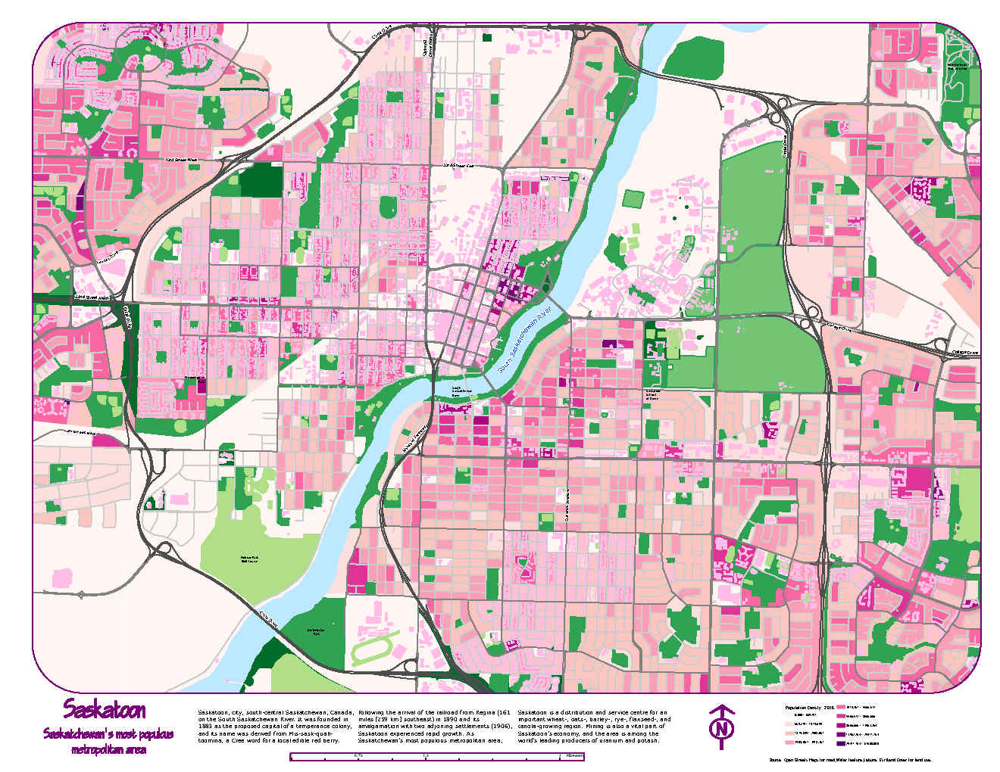

CAD Drawing

Our teams also produce and present to you a virtual representation
of the features of buildings, landscapes and more by CAD modeling.
CAD Drawing

Our surveying and mapping technicians collect data and make maps of the Earth's surface.
|
CAD Drawing
Our teams also produce and present to you a virtual representation of the features of buildings, landscapes and more by CAD modeling. |
CAD Drawing
Figure 2.1: CAD Plan Survey - This plan was created to show the plan survey of a Concession in the original Township of Ops which is now the City of Kawartha Lakes. This specific map has the contour outlines of the area which help to show which areas would be suitable for mapping and which would not be. |
|
Maps Figure 3.1:Saskatoon Population Density Map - This map was created in 2021 and it outlines Saskatoon’s most populated metropolitan areas. The white areas indicate that the population is sparse and as the population per area gets larger/denser the color shifts from a light pink to dark pink and then finally to purple. The purple indicates the most populated areas |
Graphs and charts 
Figure 4.2: Visual and Near Infrared Spectral Signatures for Different Landuse - his graph was created to aid with a topographic map outlining the visible and near infrared spectral signatures for different land use types. It shows that the agricultural fields with crops have the highest reflectance and wavelength whereas as expected the deep water has the lowest reflectance and wavelengths |